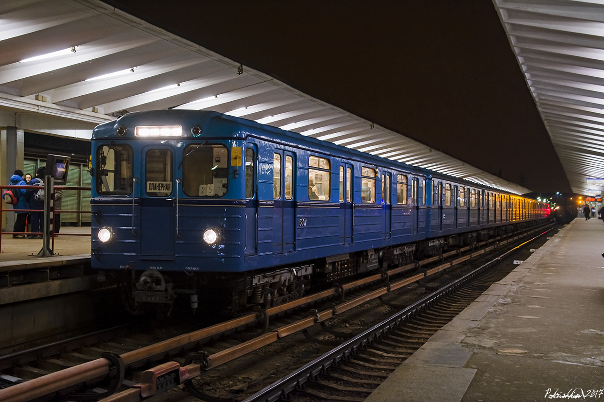
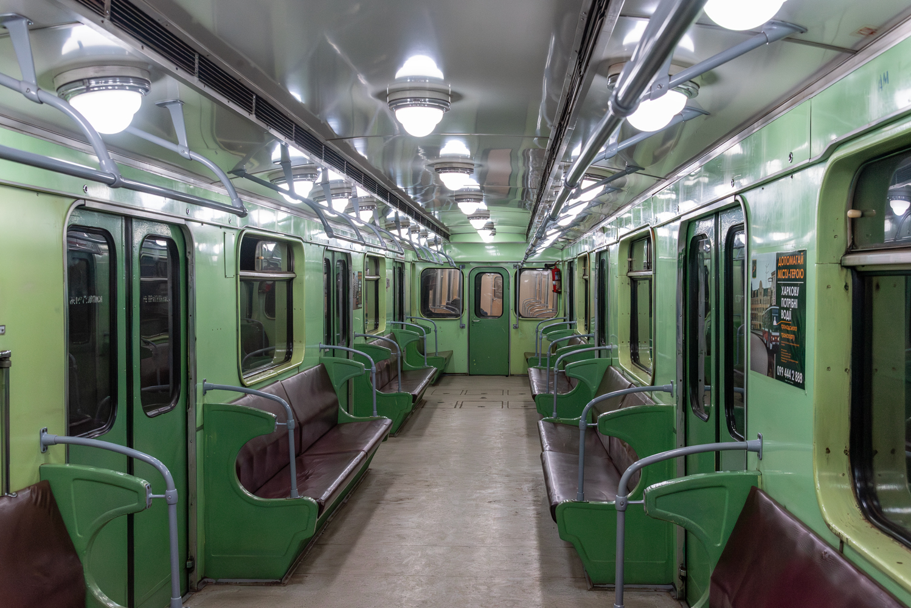
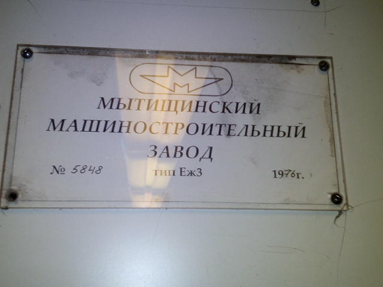
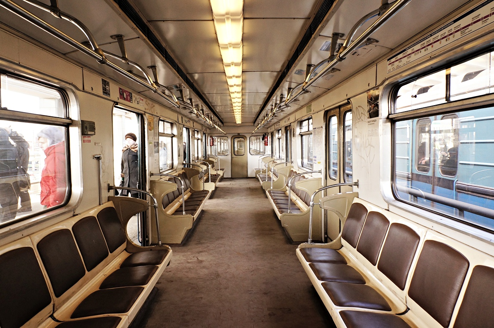
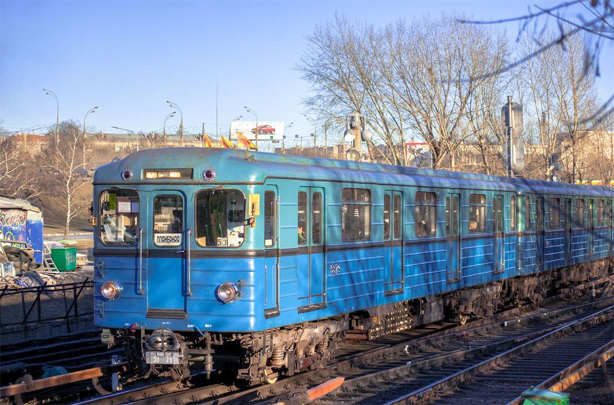

Вагоны типа Еж3
Еж3 (заводское обозначение — 81-710) — тип электровагонов метрополитена, выпускавшийся на Мытищинском машиностроительном заводе и являющийся дальнейшим развитием вагонов типа Еж. От предшественников отличаются обновлённым электрооборудованием с системой авторегулирования скорости, новым пультом управления и изменениями в конструкции сидений.
В обиходе этот тип (как и его предшественник «Еж») часто называют «Ёжиками». Вагоны Еж3 — отдельный тип, они не могут эксплуатироваться в одном составе с вагонами типов Е и Еж.
Производство
Вагоны типа Еж3 были разработаны на Мытищинском машиностроительном заводе в 1973 году как усовершенствованная версия вагонов типа Еж с новым электрооборудованием и системой авторегулирования скорости (АРС).
Первая опытная партия из 13 вагонов (№ 5561—5573) была выпущена в 1973 году. У этих вагонов вверху лобовой части кабины отсутствовал трафарет, имевшийся у большинства других советских метровагонов. Начиная с октября того же года завод начал серийное производство — уже с трафаретом на лобовой части.
| Параметр | Значение |
|---|---|
| Годы постройки | 1973—1977 |
| Страна постройки | СССР 🇷🇺 |
| Завод | Мытищинский машиностроительный (ныне «Метровагонмаш») |
| Вагонов построено | 472 (+1 не выпущен) |
| Нумерация | 5561—5999, 9000—9049 |
| Предшественник | Еж (81-707/81-708) |
| Совместимые вагоны | Ем-508Т (промежуточные) |
Выпуск по годам
| Год | Еж3 | Еж6 | Ем-508Т | Номера |
|---|---|---|---|---|
| 1973 | 19 | 6 | — | 5561—5579 (Еж3), 5580—5584, 5590 (Еж6) |
| 1974 | 123 (+1) | — | 75 | 5585—5709, 5713 (Еж3), 6398—6472 (Ем-508Т) |
| 1975 | 123 | — | 85 | 5714—5836, 6473—6557 |
| 1976 | 103 | — | 99 | 5838—5945, 6658—6756 |
| 1977 | 104 | — | 118 | 5946—5999, 9000—9049, 6757—6874 |
| 1978 | — | — | 60 | 6992—7051 |
| 1979 | — | — | 40 | 7052—7091 |
| 1986 | — | 4 | — | 0090—0093 |
| Всего | 472 | 10 | 477 | — |
Интересный факт: Семь вагонов Еж3, выпущенных в 1975 году, изначально были построены в 1972 году как Ечс (№ 5601—5607). После испытаний в Московском метрополитене они были возвращены на завод и переоборудованы в серийные Еж3, получив новые номера 5923—5926 и 5943—5945.
Еж6: модификация Еж3 с немного изменёнными электрическими схемами для совместной эксплуатации с контактно-аккумуляторными электровозами типа Л, также созданными на базе Еж3.
Технические характеристики
| Параметр | Значение |
|---|---|
| Тип токосъёма | Нижний боковой контактный рельс |
| Род тока и напряжение | 750 В постоянного тока |
| Типы вагонов | Мг (часть после КВР — Мп) |
| Число вагонов в составе | 2—8 |
| Композиция состава | 2—8×Мг (Мг + 0..6×Мп + Мг после КВР) |
| Количество дверей | 2×4 |
| Полная вместимость | 264 чел. |
| Сидячих мест | 42 |
| Длина вагона | 19 166 мм |
| Ширина | 2 700 мм |
| Высота | 3 695 мм |
| Диаметр колёс | 780 мм |
| Осевая формула | 20—20 |
| Ширина колеи | 1 520 мм |
| Масса тары | 31,7 т |
| Материал вагона | Сталь |
| Тип ТЭД | ДК-116А, коллекторные |
| Мощность ТЭД | 4 × 72 кВт |
| Макс. скорость | 90 км/ч |
| Макс. служебная скорость | 80 км/ч |
| Ускорение при пуске | 1,1 м/с² |
| Ускорение при торможении | 1,2 м/с² |
| Электрическое торможение | Реостатное |
| Система тяги | Реостатно-контакторная |
| Тормозная система | Электрическая, пневматическая |
| Системы безопасности | АЛС-АРС |
Ключевые отличия от Еж
⚡ Более мощные ТЭД
Двигатели ДК-116А часовой мощностью 72 кВт (против прежних 68 кВт у Еж).
🎛️ Тиристорные регуляторы
Тиристорные регуляторы ослабления возбуждения в силовой цепи для плавного управления током возбуждения ТЭД при торможении на высоких скоростях.
🛡️ АЛС-АРС
Впервые внедрена автоматическая локомотивная сигнализация с автоматическим регулированием скорости.
🎚️ Новый пульт
Пульт управления, как у вагонов Ечс, состоящий из двух наклонных панелей на всю ширину напротив правого лобового окна.
💺 Жёсткие сиденья
Сиденья стали жёсткими с натянутой кожаной обивкой коричневого цвета (как на 81-717/714).
🚫 Несовместимость
Еж3 — отдельный тип, не может эксплуатироваться в одном составе с Е и Еж. Работает с промежуточными Ем-508Т.
Конструкция
Механическая часть
По конструкции механической части Еж3 почти не отличаются от вагонов типа Еж. Как и предшественники, вагоны имеют стальной гофрированный кузов с четырьмя автоматическими раздвижными дверями по бокам и центральной торцевой дверью у кабины машиниста. Каждый вагон опирается на две двухосные моторные тележки, снабжённые рельсовыми токоприёмниками по бокам.
Электрическая часть
На вагонах Еж3 установлены более мощные тяговые двигатели ДК-116А (72 кВт против 68 кВт) и тиристорные регуляторы ослабления возбуждения в силовой цепи. Также впервые внедрена автоматическая локомотивная сигнализация с автоматическим регулированием скорости.
Напряжение 750 В подаётся из контактного рельса через 4 рельсовых башмака токоприёмника типа ТР-3А, включённых параллельно. Токоприёмники установлены по два с каждой стороны вагона. В зависимости от расположения контактного рельса (на линии и в электродепо) вагон может питаться как через один, так и через несколько токоприёмников.
От токоприёмников напряжение 750 В поступает:
- через главный предохранитель П и главный разъединитель ГВ — в цепи тяговых электродвигателей;
- через сопротивление и автомат вспомогательных цепей АВЦ — во вспомогательные цепи высокого напряжения (главное освещение, отопление кабины, электродвигатель компрессора и т. д.).
Компрессоры
Пневматические тормоза, некоторые электрические аппараты и автоматические двери работают на сжатом воздухе. Для его получения на каждом вагоне установлен мотор-компрессор: поршневой компрессор ЭК-4А и его электродвигатель ДК-408А, питающийся напряжением 750 В.
Для автоматического включения/выключения компрессоров в зависимости от давления в пневмосистеме установлен регулятор давления. Когда давление достигает 8 атмосфер — компрессоры выключаются, когда падает до 6,5 атмосфер — снова включаются. Все компрессоры поезда управляются регулятором давления того вагона, на котором включён выключатель компрессоров.
В каждой кабине есть кнопка «Резервный мотор-компрессор» — на случай неисправности цепи управления. При нажатии контакторы компрессоров включаются независимо от регуляторов давления, а машинист контролирует давление по манометру.
Фары и сигнальные огни
На лобовой части установлено по 5 фар — две ближнего света и три дальнего (на вагонах после КВР модели Еж3РУ1 — 4 фары усиленного света). Фары ближнего света — в нижней части по бокам, дальнего — по центру над торцевой дверью. Лампы фар включаются, когда реверсивная рукоятка контроллера находится в положении «Вперёд».
Для обозначения хвоста поезда над кабиной (справа и слева) установлены сигнальные огни — два маломощных светильника красного света. Их лампы включаются, когда реверсивная рукоятка находится в положении «0» или «Назад».
Интерьер
Пассажирский салон
С каждой стороны — по четыре автоматических двустворчатых раздвижных двери. Между дверными проёмами вдоль центрального прохода установлены мягкие диваны лицом к центру и спинками к окнам. Диваны в проёме между дверями — шестиместные, в торцевой части напротив узких окон — трёхместные.
По сравнению с Еж и Ем, сиденья стали жёсткими с натянутой кожаной обивкой коричневого цвета (как на 81-717/714). После модернизации сиденья во многих вагонах Московского и Тбилисского метрополитенов были заменены на пластиковые с индивидуальной для каждого пассажира спинкой и сидушкой (коричневые в Москве, красные в Тбилиси). При модернизации головных вагонов в промежуточные и ликвидации кабины сиденья на её месте не устанавливались — для увеличения вместимости.
Потолок состоит из трёх частей — центральной и двух заниженных боковых, с решётками естественной вентиляции на границе боковых частей. Вдоль салона заводской конструкции размещаются три ряда круглых плафонов с лампами накаливания. После модернизации плафоны часто заменялись на непрерывную световую линию из люминесцентных светильников по центру потолка.
Стены и потолок отделаны светло-серым пластиком. Боковые окна между дверями снабжены сдвижными форточками. Вагоны оснащены переговорными устройствами связи «пассажир — машинист», расположенными по бокам от дверных проёмов.
Кабина машиниста
Кабина отделена от салона перегородкой и рассчитана на управление поездом в одно лицо. Спереди — торцевая дверь и два окна по бокам, сзади — дверь прохода в салон. По левому борту — дверь для входа машиниста, по правому — окно. Пульт управления и кресло машиниста — с правой стороны, слева на передней стенке — колесо стояночного тормоза.
В кабине Еж3 установлен новый пульт управления (как у Ечс), состоящий из двух наклонных панелей на всю ширину напротив правого лобового окна. На верхней панели — приборы мониторинга (вольтметр батареи, амперметр ТЭД, вольтметр сети, лампы АРС, скоростемер, манометры), на нижней — органы управления (рукоятки контроллера и тормозного крана, кнопки и переключатели).
При последующей модернизации устанавливался более компактный пульт ПМ.05 без рукояток на панели. Рукоятка контроллера вновь размещалась на отдельной тумбе слева и поворачивалась в горизонтальной плоскости, как на Е, Еж и Ем. Справа от пульта — тормозной кран с горизонтальной рукояткой. Амперметр и вольтметр сети вынесены в отдельный блок над пультом.
Эксплуатация
Первые опытные вагоны № 5561—5573 в августе—октябре 1973 года поступили в электродепо «Красная Пресня» для работы на Краснопресненской линии. В сентябре—ноябре 1974 года пришли серийные Еж3 и первые Ем-508Т. Более старые вагоны Еж, Еж1, Ем-508 и Ем-509 были отправлены в депо «Северное» для замены вагонов типа Д.
В 1978 году начата эксплуатация Еж3 и Ем-508Т на Горьковско-Замоскворецкой линии. Для формирования поездов в депо «Сокол» поступили головные Еж3 и промежуточные Ем-508Т, часть которых (из-за нехватки уже не выпускавшихся Еж3) была переоборудована в головные.
С августа 1980 по октябрь 1983 года все вагоны, по мере прихода новых 81-717/714, постепенно передавались в депо «Планерное». За счёт этого в конце сентября 1983 года Ждановско-Краснопресненская линия была переведена на 8-вагонные поезда.
| Метрополитен | Годы | Примечание |
|---|---|---|
| Московский | 1973 — 11 июня 2020 | Регулярная эксплуатация прекращена; «Новогодний поезд» сохранён в резерве |
| Харьковский | с 1970-х — н. в. | Холодногорско-Заводская линия; есть модернизированные |
| Тбилисский | 1970-е — н. в. | Ахметели-Варкетилская линия; все вагоны модернизированы (Еж3М) |
| Киевский | 1973—1979 | Электровоз 5823; затем передан в Харьков |
| Ташкентский | 1977—1985 | Переданы в Тбилиси и Баку в 1986—87 |
| Бакинский | 1973—2008 | Полностью списаны к 2009; один вагон — в ретро-поезде |
К 2020 году в регулярной эксплуатации вагоны Еж3 остались только в метрополитенах Харькова и Тбилиси. В Тбилиси все вагоны прошли модернизацию (Еж3М) с установкой масок головных вагонов и окраской по типу пражских 81-71М.
Тематические поезда
Вагоны Еж3 и Ем-508Т становились основой для именных составов Московского метрополитена.
Фотогалерея

📸 Pokrishkin

📸 pfandrom

📸 Pokrishkin

📸 Михаил Ждунов

📸 Константин Юрьевич

📸 kosteg(transphoto.org)
Нажмите на фото для увеличения
«Еж3 — последние „Ёжики“ советского метро. Они вобрали в себя всё лучшее от предыдущих серий и дослужили до эпохи, когда на смену пришли совсем другие поезда. Но новогодний поезд с ними до сих пор возвращается на линии — как добрая традиция».